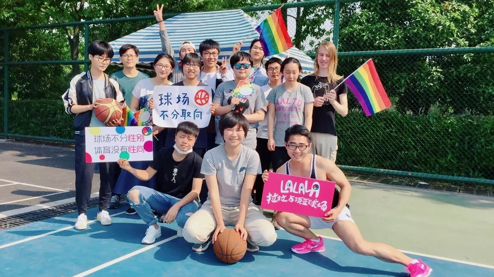
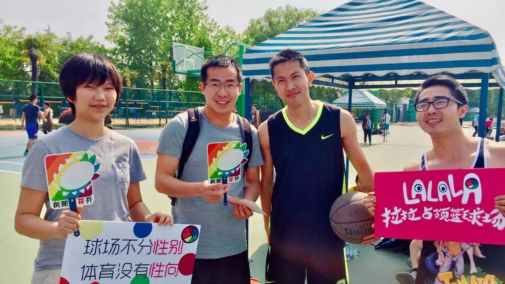
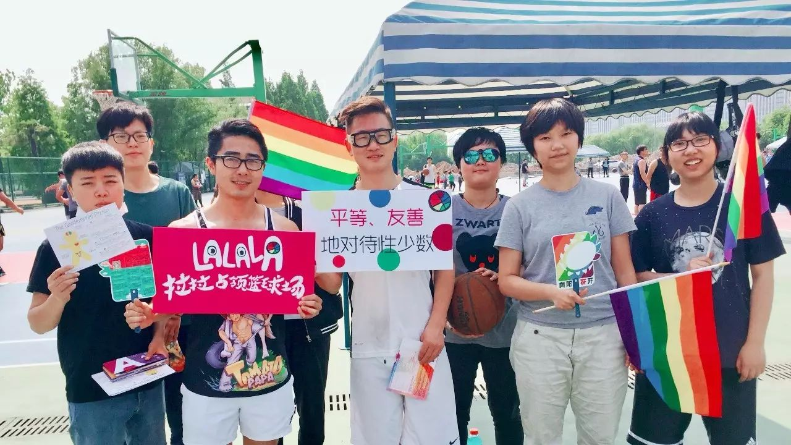
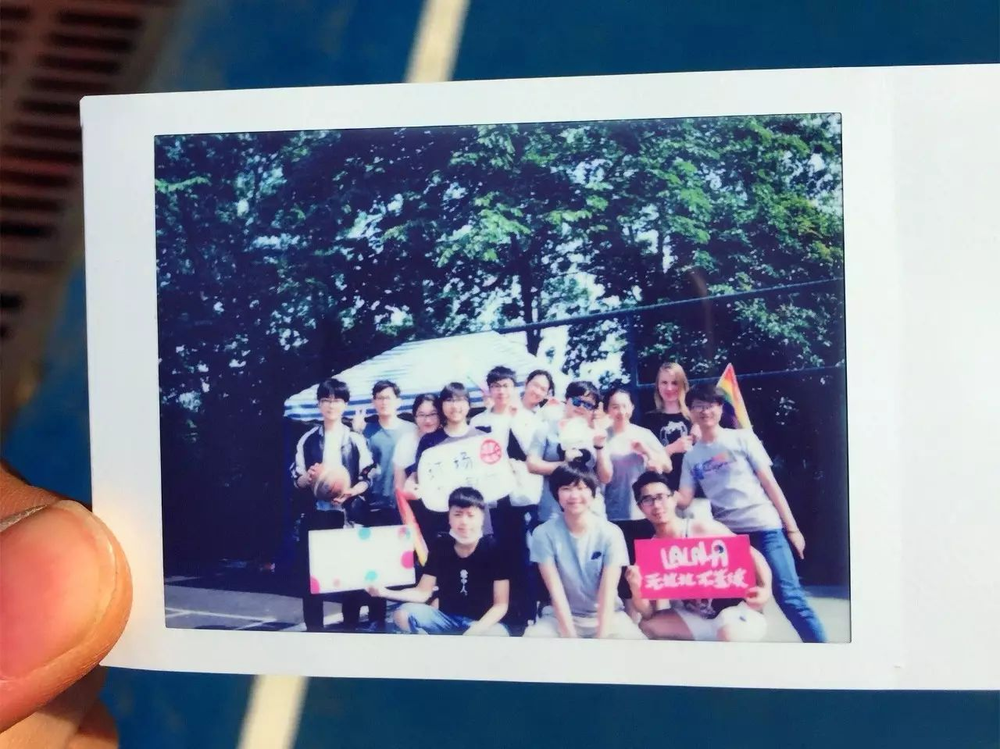
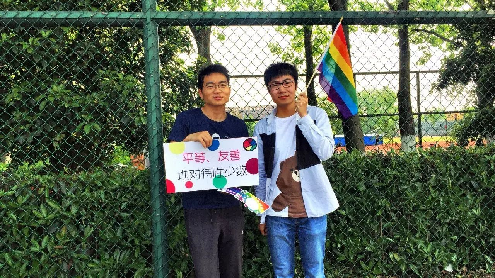

棱镜 | 占领篮球场之后


相信大家都看过昨天关于“拉拉占领篮球场”的活动文章了，我们的志愿者丸子在参与过这次活动之后，对于倡导活动的开展进行了深入的思考。相信他的思考对于我们未来开展类似的活动有着很大的帮助，现在就让我们一起来看看他是怎么想的吧，也欢迎小伙伴们在下方留言和我们一起讨论哦~

我们需要什么样的街头倡导活动？
是更强调可视化产出的、可纳入绩效体系的、在展示成果时可以拿出一摞照片和数据以证明活动效度的倡导活动，还是更强调尊重参与者主体性与个人意志、推崇平等对话与公开讨论、将公共议题还原进个人叙事进行分析的倡导活动？这二者并非天然矛盾，在具体的倡导实践中，我们可以采取一些策略来达到二者兼得的效果。

在活动中，我们会为参与者提供合影、举标语、签名等仪式选项，这些仪式存在的合理性一方面在于，虽然倡导活动诉诸参与者在思维和意识方面友善度的提升，但这些改变通常难以在倡导活动中通过短暂的言语接触促成，而通过一些简便易行的仪式，能给参与者一种“融入其中”的主体感受，即使无法起到扭转观念的立时奇效，也能通过情绪的生产和传递潜在地产生“让参与者对性少数话题保持长期关注”的效果。另一方面，虽然倡导活动的直接关涉主体是现场参与者，但在大众媒介高度发达的当下，其影响力实际上存在于媒介所能抵达的所有空间，作用于媒体触角之下的全部接受者。现代媒体影响力中的核心要素是可视化图像，活动照片所承载的文本信息、情感吁求、精神价值是直接而富于感染力的。现场参与者的属性在此时从直接作用对象演化为传播机制中的关键手段。只有对现场参与者的双重属性有充分的认知，意识到影响机制产生作用的双重场域，才能更好地制定活动的行动方略。

究竟什么是社会倡导
社会倡导的核心概念是什么？
在倡导过程中，最让我困惑的地方是，我们的预期是什么，我们究竟想要获得怎样的效果。通过一些巧妙设计的技术性策略，让参与者作出同意合影的姿态，就够了吗？窃以为，倡导活动手段可以分为两类，知识传授型和感受体验型，而后者是倡导活动的核心，前者只能以辅助的形式进行补充，以必要的限度存在。囿于单一的信息承载形式，在我们留下的宣传册中，我们想要传达的信息只能以知识型的文字和条目存在，但我们的核心意旨是激发读者对相关议题的关注度和兴趣，而不是让他们在森严的专业术语体系和严整印刷的文字信息下颔首低眉。倡导过程在本质上是创造主体的过程。起初，我们是活动的主体，我们分享多元性别概念，分享我们对性少数平权的态度，但绝不是要让参与者成为科学话语下的被动接受者、一个无声的客体，而是要激发他们成为主动思考相关议题的主体。但据我观察到的现象，很多参与者的态度是，“嗯我知道这件事了，那我能怎么配合你？”、“原来拍个照就行啦？那行吧，拍了照就算完”。这种态度或许能折射出一种权力关系，即，我们是站在政治正确之巅的、高高在上的生产意志和传播意志的主体，而他们是迫于道义上的压力和现场环境的形势而不得不作出配合姿态、以求息事宁人的客体，当他们完成了我们所建议（实际上是“要求”）的合影之后，这种情境性的权力关系即宣告结束，操行仪式所产生的效果寥寥。

现场倡导的叙事关键是“说服”。一个理想的完整说服链条由“以情动人”到“以理服人”两个主要环节构成。倡导活动在时间跨度上天然的局限性决定了其重点应放在情绪的传递上，在理性的追求上上则应埋下思索的种子，将具体的理性思考过程转移给参与者个人。然而创造主体性的最关键步骤恰恰是发生于“情”与“理”之间的“激发”过程。情绪的分享是利用同理心和共情创造出人类共通的情感体验，将参与者引入我们的叙事氛围，从一个“与我无关”的路人成为“原来这件事离我这么近”、“原来在这个议题中我这么重要，可以发挥这么大的作用”的相关方，这时参与者已经做好了成为主体的准备。激发思考的关键是分享多元观点，并“邀请”参与者思考其个人的观点。在倡导活动中，我们往往有共同的政治口号或群体宣言，直接明了，简单嘹亮，不容异议。其实，在分享我们平权的观点时，不妨问一问参与者，“你怎么看”。对一个路人来说，扑面而来的“平权”话语往往气势汹汹而不容置疑，如果只是对参与者进行观点或情绪的狂轰滥炸，恐怕TA还是不为所动。我认为更好的选择是表达出“邀请”的姿态。通过分享多元观点，我们实际上给参与者发出了一张参与公共讨论的邀请函，引导他思考不同相关方的观点论调。在政治正确日渐成为高校文化主流的同时，值得警惕的是平权话语演变为新霸权的趋势，其引发的反感情绪恐使前功尽弃。在华中科技大学事件中，平权话语已经占据了公共讨论浪潮的上风向，我们的活动正当性事实上具备社会承认的义理支持，因此在做出“反抗”姿态和发声的同时，更应该注意用“对话”取代“独白”，以践行多元价值的内核。倡导话语是启蒙话语，而启蒙是要“唤醒”，而非“灌输”。

在具体的倡导实践中，由于各种因素的限制，这一套完整的倡导链条可能无法传达出来，在信息不全和逻辑断裂的情况下，启发式的倡导策略就更显重要。举一个例子，在这次活动中，我携带了拍立得相机，并将一个参与者与标语和彩虹旗合照的相纸赠送于他。我认为，即使他当时是迫于压力而同意我们的合照邀请，这张相片所承载的友善的情感隐喻也会让他在心里留存一份美好的印象。此外，相片这种固定的物质形式本身就代表一种记忆、一种叙事轨迹，他可能会扔掉我们分发的宣传册，但他也许会保存这张相片。它就像一颗种子，而这颗种子的情感隐喻与平权活动的精神价值是一致的。我还注意到在倡导话语中，我们能够与参与者建立某种“信约”。“你支持性少数平权，那下次的活动你也要支持哦”，在融洽的氛围下展开的半开玩笑式的“约定”传达了我们的期待。在皮格马利翁效应的解释下，面对一个善意动机的外在期待，个体往往会朝这个方向来形塑自身。

倡导实践的策略并非孤立的，而是整体倡导元叙事之下个体行动方略的呼应与回响。街头倡导活动直接接触社会个体，亲近社区文化土壤，并且以个体对个体的形式呈现，每个参与者都具备行动的主体性，因此在操作中留有较大的灵活性。我的设想是，街头倡导应当是赋权的、启蒙的、个人化的、互动性的，即使操作技术层面无法避免工具理性的介入，但人文内涵是让每一次倡导活动都能直达人心的关键。
文字 | 丸子
编辑 | 文文
图片 | 狐狸 文文 暖阳